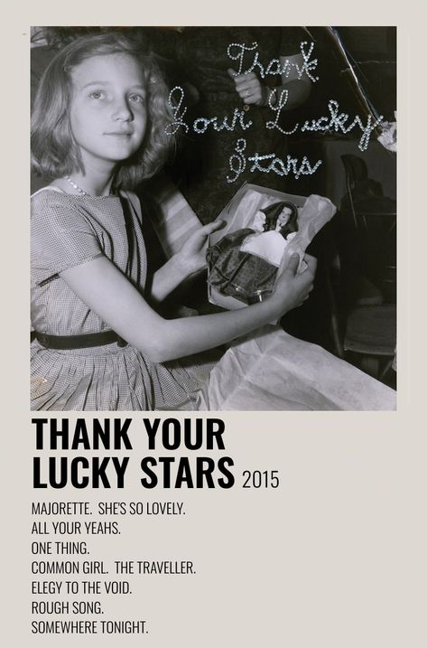

Thank Your Lucky Stars is the sixth studio album by American dream pop duo Beach House. It was co-produced by the band and Chris Coady, and was released on October 15, 2015, by Sub Pop in North America, Bella Union in Europe, and Mistletone Records in Australia. The album was released less than two months after their fifth studio album, Depression Cherry. Described by the band as "not a companion to Depression Cherry, or a surprise, or b-sides", Thank Your Lucky Stars was unexpectedly announced eight days before its release via the band's Twitter account. It received mostly positive reviews from critics. My three personal favorites in this album are; She’s so Lovely, Rough Song, and Somewhere Tonight.
Back 